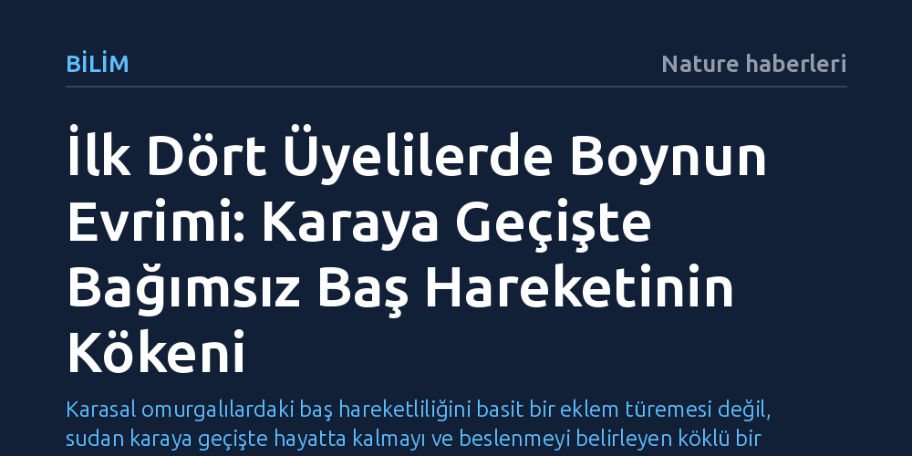

BILIM · Nature haberleri · 2026-10-15
İlk dört üyelilerin boyun yapısı, kafatası ile omuz kuşağı arasındaki kemiksel bağlantının kopması ve ön omurların yeniden düzenlenmesiyle ortaya çıkmıştır. Bu anatomik ayrılma, karaya çıkan omurgalıların tüm gövdelerini döndürmek zorunda kalmadan çevrelerini taramalarını ve avlanmalarını sağlamıştır.
Karasal omurgalılardaki baş hareketliliğini basit bir eklem türemesi değil, sudan karaya geçişte hayatta kalmayı ve beslenmeyi belirleyen köklü bir iskelet dönüşümü olarak görmemizi sağlar.

Balıklarda baş ile gövde tek bir rijit kütle halinde hareket eder. Yüzgeçleri destekleyen omuz kuşağı (pektoral kuşak), doğrudan kafatası kemiklerine kenetlenmiştir. Bu nedenle bir balığın başını sağa veya sola çevirebilmesi için tüm gövdesiyle yön değiştirmesi gerekir. Su ortamında hidrostatik basınç ve kaldırma kuvveti bu anatomiyi avantajlı kılsa da, karasal yaşama geçişte bu durum ciddi bir hareket kısıtlılığı doğurmuştur.
Yaklaşık 375 milyon yıl önce omurgalıların sudan karaya adım atması, iskelet mimarisinde köklü bir değişimi zorunlu kıldı. İlk dört üyeli omurgalılar (tetrapodlar), başlarını omuz kuşağından ayıran ve gövdeden bağımsız hareket imkânı tanıyan işlevsel bir boyun yapısı geliştirdiler. Yeni araştırmalar, bu evrimsel adımın basit bir kemik kaybından ibaret olmadığını, kemik ve kas sisteminin baştan aşağı yeniden organize edildiği karmaşık bir süreç olduğunu gösteriyor.
Boynun evrimleşmesindeki ilk kritik aşama, kafatasının arkasını omuz kuşağına kilitleyen dermal kemik dizisinin gerilemesi ve kaybolmasıydı. Tiktaalik gibi geçiş formu fosillerinde açıkça izlenen bu kopuş, kafatasını omuz kemerinden fiziksel olarak ayırdı. Ancak bu bağlantının kopması tek başına kontrollü bir baş hareketi sağlamaya yetmiyordu; başın ağırlığını taşıyacak ve yönlendirecek yeni bir eklem mekanizması gerekiyordu.
Korneisel ve ekibinin yürüttüğü kapsamlı anatomik analizler, bu serbestleşmeyle eş zamanlı olarak ön omurların geçirdiği dönüşümü aydınlatıyor. Kafatasının tabanındaki oksipital bölge ile ilk omurlar arasında özelleşmiş eklem yüzeyleri biçimlenirken, omuz kuşağı geriye çekilerek omurga üzerinde bağımsız bir konuma yerleşti. Böylece ön omurlar, başın hem yatay hem dikey düzlemde esnekçe hareket etmesini sağlayan biyomekanik bir menteşe sistemine dönüştü.
Boynun kazanılması, erken omurgalıların beslenme biyolojisinde devrim yarattı. Suda yaşayan yırtıcılar avlarını ağız boşluğunda ani bir emme basıncı oluşturarak yakalarken, hava ortamında bu yöntem çalışmaz. Karada avlanabilmek için başı doğrudan hedefe yöneltmek, zemine çarpmadan aşağı doğru hamle yapabilmek ve çeneyi doğru açıyla kapatabilmek şarttır.
Bağımsız baş hareketi aynı zamanda muazzam bir enerji tasarrufu sağladı. Karada tüm gövdeyi çevirmek, yerçekimi ve sürtünme nedeniyle suda dönmeye kıyasla çok daha fazla enerji harcatır. Sadece boynu çevirerek çevreyi tarayabilmek, hem avları ve tehlikeleri erkenden fark etmeyi kolaylaştırdı hem de erken tetrapodların sığ kıyılardan iç karalara doğru yayılmasını hızlandırdı.
Paleontologlar ve evrimsel biyologlar arasındaki tartışmalar, boynun ortaya çıkışındaki birincil tetikleyicinin ne olduğu üzerinde odaklanıyor. Bir grup araştırmacı, vücut planını belirleyen Hox genlerindeki ifade alanı kaymalarının bu dönüşümü başlattığını ileri sürerken; diğerleri karada yürüme ve başı taşıma zorunluluğunun yarattığı mekanik streslerin kemik morfolojisini şekillendirdiğini savunuyor.
Fosil kayıtlarının doğası gereği yumuşak dokuların korunamamış olması, boyun kaslarının tam olarak hangi evrede bugünkü işlevselliğine ulaştığı sorusunu hâlâ açıkta bırakıyor. Kemiksel serbestleşme ile bu serbestliği yönetecek nöromüsküler donanımın senkronizasyonu, omurgalı evriminin en dinamik araştırma sahalarından biri olmaya devam ediyor.